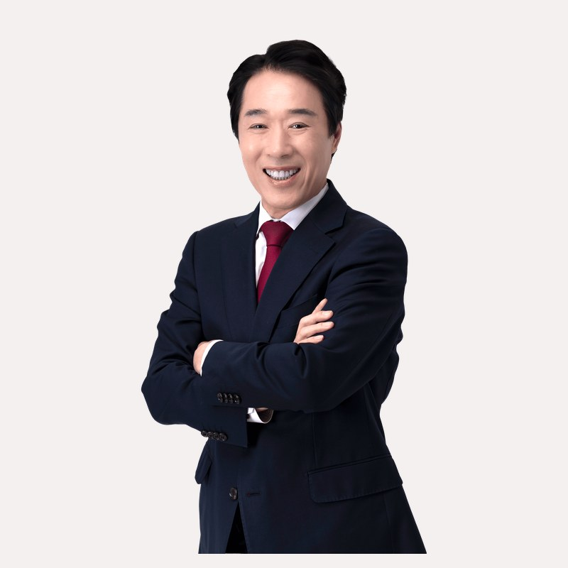
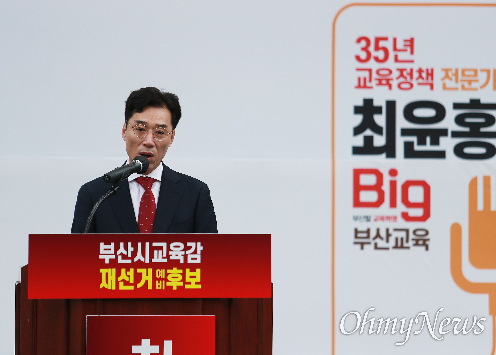
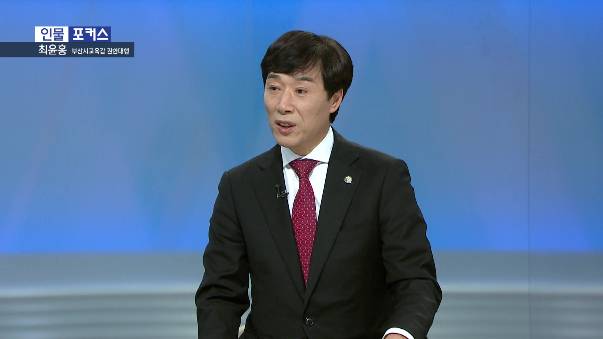
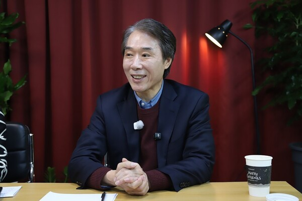
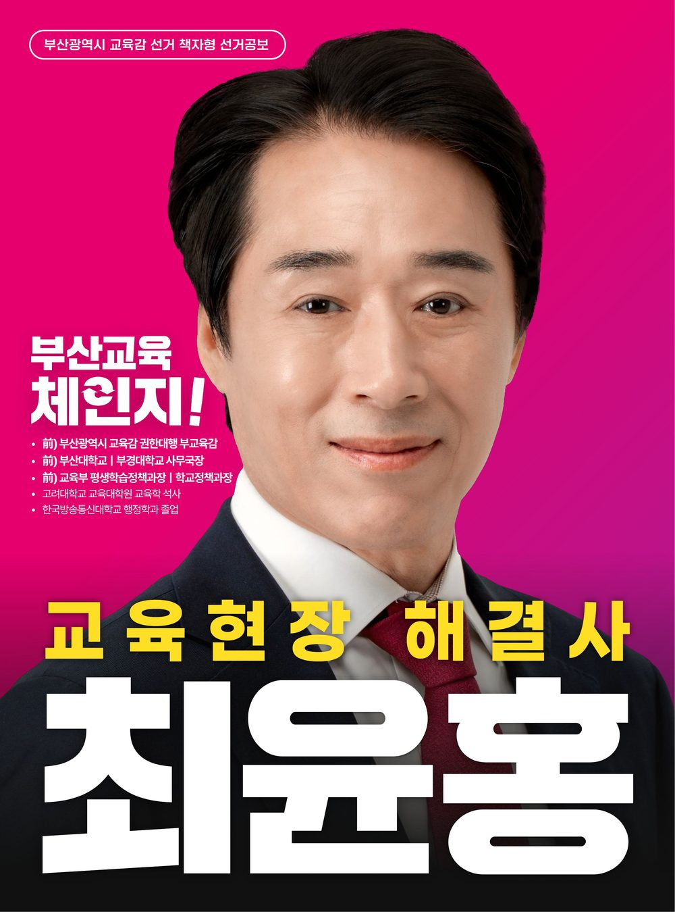

사진첩 현장에서 만나는 최윤홍









교육현장 해결사
부산교육 체인지
최윤홍이 해내겠습니다
"교육 현장 35년, 제 인생의 전부입니다.
현장을 모르는 정책은 아이들을 혼란에 빠뜨리고,
행정을 모르는 공약은 빈 약속으로 남을 뿐입니다.
저 최윤홍, 부산교육 반드시 살려내겠습니다."
부산교육감 후보 · 부산진구 거주
1989년 공직 시작
말뿐인 대전환은 누구나 말합니다.
하지만 답은 결국 현장에 있습니다.
최윤홍의 실력은 '현장'에서 완성되었습니다.
부산 교육을 실질적으로 운영하며 위기 관리 능력을 검증받았습니다. 학부모님들의 큰 호응을 얻은 '늘봄' 정책을 전국 최초로 설계하고 도입한 사람입니다.
국립대학 행정을 총괄하며 지역 살리기와 교육 살리기의 핵심이 '대학과의 협력'임을 체험했습니다. 그 경험을 바탕으로 '인성 영·수 캠프'를 탄생시켰습니다.
전국 각급 학교 정책을 총괄했습니다. '원영이 사건' 이후 미취학 아동 관리 매뉴얼과 예비소집 불참시 수사기관 협력 체계를 직접 마련해 대한민국 교육 안전망의 기틀을 세웠습니다.
국가 평생교육 정책을 총괄하며 소외계층 교육 기회 제공, 노인 문해력 교육 등에 앞장섰습니다. '부산형 평생교육 시대'를 열겠습니다.
35년간 다져진 탄탄한 중앙정부-교육계 네트워크로 아침체인지, 늘봄학교 특별교부세 예산 확보로 이미 실력을 증명했습니다.
결국 현장, 결국 실력입니다.
부산의 미래가 달린 교육, 최윤홍이 바로 세우겠습니다.
기술이 앞서갈수록, 교육의 본질은 더 단단해져야 합니다. 커리큘럼으로 부산 아이들의 미래를 책임지겠습니다.
암기 위주의 과거 교육을 넘어, 부산의 아이들을 세계적 수준의 창의 융합 인재로 키워내겠습니다. 단 한 명의 기초학력 미달도 발생하지 않도록, 공교육이 책임지는 완벽한 학습 지원 체계를 구축하겠습니다.
교육의 기회는 누구에게나 평등해야 하며, 경제적 형편이 꿈의 장애물이 되어서는 안 됩니다. 학부모님의 교육비 부담은 획기적으로 낮추고, 아이들의 경험의 폭은 무한히 넓히겠습니다.
대한민국 늘봄학교를 처음 설계하고 도입한 전문가의 노하우로 돌봄 사각지대를 완전히 해소하겠습니다. 영유아부터 초등 저학년까지, 부모님의 경력 단절 걱정 없는 '안심 돌봄 책임제'를 실현하겠습니다.
교육의 질은 교사의 열정에서 나옵니다. 선생님이 오직 아이들 교육에만 전념할 수 있는 환경을 만들겠습니다. 교권 보호는 강력하게, 행정 업무는 부담없이 줄여 부산 교육 확 끌어 올리겠습니다.
부산을 AI 인재 양성의 메카로 만들겠습니다. 세계가 주목하는 K-콘텐츠와 첨단 기술이 융합된 특성화 교육으로 우리 아이들의 진로를 넓히겠습니다.
학부모님이 안심하고 아이를 보낼 수 있는 환경, 그것이 모든 교육 정책의 기본입니다. 학생의 건강부터 학교 시설의 안전까지, 35년 행정 전문가의 눈으로 빈틈없이 챙기겠습니다.





9급 공무원으로 시작해 부교육감과 교육감 권한대행까지,
35년간 머문 곳은 언제나 '교육 현장'이었습니다.
아이들이 형편과 관계없이 '꿈의 사다리'를 오를 수 있는 교육,
부모님이 불안 없이 아이를 믿고 맡길 수 있는 교육,
저 최윤홍이 반드시 해내겠습니다.